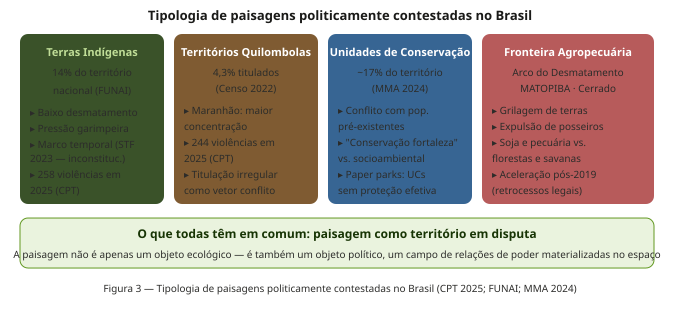
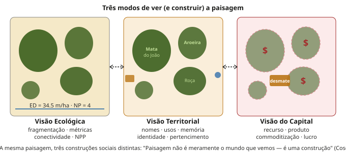
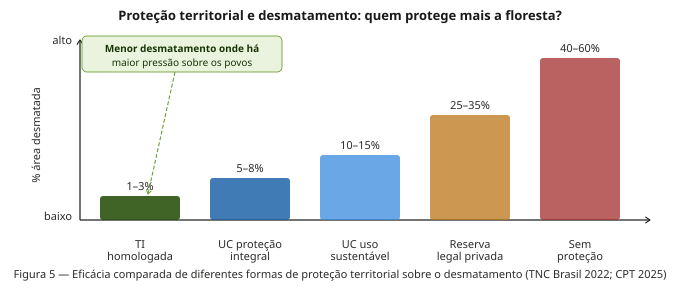

Semana 12: Ecologia Política
Conflitos de terra, poder e a construção social da paisagem
Apresentação da aula
1 Introdução: por que a ecologia política importa para a ecologia de paisagens?
Nas semanas anteriores, analisamos paisagens em termos de padrão (fragmentação, métricas), processo (conectividade, fluxos biogeoquímicos) e dinâmica (metapopulações, perturbação). Esta semana damos um passo crítico: perguntamos quem decide como a paisagem é configurada, em benefício de quem e a que custo para quem.
A Ecologia Política surge exatamente dessa tensão. Ela parte do reconhecimento de que as paisagens que estudamos — fragmentadas, degradadas, conservadas, contestadas — não são simplesmente o resultado de forças “naturais” ou de escolhas técnicas “neutras”. São o produto material de relações de poder: de decisões políticas, disputas fundiárias, exclusões históricas, resistências e saberes em conflito.
A Ecologia Política é um campo crítico e interdisciplinar em que a mudança ambiental e as lutas em torno dela são estudadas em sua dimensão material e discursiva, com foco especial em poder, marginalização e conflitos relacionados à acumulação de capital, injustiça e práticas neocoloniais. O campo emergiu nos anos 1980 e combina análises de economia política, ecologia crítica, teoria pós-colonial e estudos de movimentos sociais.
A conexão com a Ecologia de Paisagens é direta e inescapável: um mapa de fragmentação da Mata Atlântica não é apenas um registro científico — é também o mapa de 500 anos de expropriação, escravidão, monocultura e especulação fundiária. Um mapa da Amazônia não é apenas um mosaico de florestas e desmatamentos — é um mapa de conflitos, de terras griladas, de povos expulsos e de negócios legalizados. Compreender a paisagem em sua plenitude exige entender as forças sociais que a produzem.
2 A cadeia de explicação multinível
2.1 Blaikie, Brookfield e o ponto de partida
A obra fundadora de Piers Blaikie e Harold Brookfield, Land Degradation and Society (1987), introduziu o conceito de cadeia de explicação (chain of explanation): a ideia de que a degradação ambiental não pode ser explicada apenas pela análise das práticas locais de uso da terra. Para entender por que um agricultor derruba uma floresta ou erode um solo, é preciso subir a cadeia de causas até os contextos regionais, nacionais e globais que condicionam suas escolhas.
Isso não significa que o agricultor não tem agência — significa que sua agência é estruturada por forças que ele frequentemente não controla: o preço das commodities no mercado global, a política de crédito agrícola do governo federal, a estrutura fundiária herdada do regime colonial, as condições de acesso à terra e ao trabalho.

2.2 A globalização da natureza
Peet, Robbins e Watts (2010) desenvolveram o que chamaram de “natureza global” (global nature): a ideia de que os processos ecológicos locais estão cada vez mais articulados com fluxos globais de capital, mercadorias, informação e poder. O desmatamento da Amazônia não é explicado apenas por variáveis locais — é condicionado pela demanda global por soja e carne, pelos acordos comerciais que determinam o preço das commodities, pelas cadeias globais de suprimento que conectam fazendas amazônicas a supermercados europeus e chineses.
Essa perspectiva multinível tem implicações metodológicas diretas para a Ecologia de Paisagens: uma análise de fragmentação que se limite ao mapa de uso do solo sem perguntar por que o mapa é como é produz ciência incompleta e policy ineficaz.
3 A paisagem como arena de poder
3.2 Territórios em disputa
A perspectiva da Ecologia Política reposiciona a paisagem como território: não apenas um espaço geográfico, mas um espaço apropriado — material e simbolicamente — por grupos sociais com diferentes poderes. O conceito de território incorpora as dimensões de controle, identidade, exclusão e resistência que o conceito técnico de paisagem tende a deixar de lado.
Arturo Escobar (2008), em Territories of Difference, mostra como as comunidades negras do Pacífico colombiano construíram um projeto político-ecológico alternativo ao desenvolvimento capitalista, baseado em suas práticas territoriais, saberes tradicionais e modos de vida. O território não é apenas onde se vive — é como se vive, com quem se vive e contra quem se precisa defender.
4 Tipologia de paisagens politicamente contestadas no Brasil
A Ecologia Política não é abstrata — ela se materializa em paisagens concretas. No Brasil, quatro tipos de paisagem concentram a maior parte dos conflitos territoriais:

4.1 Terras Indígenas
As Terras Indígenas (TIs) homologadas cobrem aproximadamente 14% do território nacional — mais de 110 milhões de hectares — e abrigam cerca de 50% da biodiversidade amazônica remanescente. Evidências robustas mostram que as TIs são as áreas com menor taxa de desmatamento no Brasil, mesmo quando vizinhas a regiões de expansão agropecuária intensa.
As TIs são vetor de resistência ao desmatamento: estradas que cortam territórios indígenas e quilombolas facilitam atividades ilegais e geram importantes alterações socioambientais, negligenciando as populações indígenas e seus modos ancestrais de viver e produzir.
Em 2023, o Supremo Tribunal Federal julgou inconstitucional a chamada “tese do marco temporal”, que pretenderia limitar a demarcação de TIs às áreas ocupadas em 5 de outubro de 1988. A decisão foi um marco jurídico — mas a pressão sobre os territórios continua. Em 2025, os povos indígenas continuaram à frente das categorias que mais sofreram violências no campo, com 258 ocorrências registradas.
4.2 Territórios Quilombolas
Os territórios quilombolas representam uma das formas mais antigas de resistência à escravidão e à expropriação fundiária no Brasil. O Censo 2022 revelou uma contradição estrutural: apenas 4,3% da população quilombola reside em territórios já titulados no processo de regularização fundiária, evidenciando a vulnerabilidade territorial desta população. Em 2025, os quilombolas registraram 244 ocorrências de violência no campo, incluindo invasões, ameaças e violações do direito à consulta prévia garantido pela Convenção 169 da OIT.
4.3 Unidades de Conservação: o conflito entre conservação e justiça
As UCs respondem por cerca de 17% do território nacional, mas enfrentam um desafio estrutural: muitas foram criadas sobre territórios já habitados por comunidades tradicionais, gerando conflitos de uso que persistem há décadas. A “conservação fortaleza” (fortress conservation) — modelo que expulsa populações para criar parques “virgens” — tem sido progressivamente questionada por sua injustiça social e por evidências de que comunidades bem estabelecidas frequentemente manejam o território com eficácia equivalente ou superior às unidades de proteção estrita.
O conceito de paper parks — UCs legalmente existentes mas sem proteção efetiva — ilustra outro problema: a criação de unidades de conservação pode ser usada como instrumento de poder para bloquear desenvolvimentos, mas sem a capacidade institucional de implementá-las, tornam-se paisagens de papel, apenas formalmente protegidas.
4.4 A fronteira agropecuária: MATOPIBA e o Cerrado
O MATOPIBA (Maranhão, Tocantins, Piauí, Bahia) representa a fronteira mais ativa da expansão da soja no Brasil. A expansão da fronteira do capital nessa macrorregião a transformou em uma economia agrícola globalizada que vincula a processos de expropriação e negação de direitos de povos indígenas e comunidades tradicionais, com aumento nos conflitos socioterritoriais e no desmatamento por queimadas.
No Cerrado, os dados do Atlas dos Conflitos do Campo apontam para um acirramento dos conflitos nos últimos 20 anos em função do que se denomina “neoextrativismo”. O Cerrado já perdeu mais de 50% de sua cobertura original e permanece fora do escopo de proteção da Lei da Mata Atlântica, sem legislação federal equivalente.
5 A paisagem como construção social: três modos de ver
A mesma paisagem física pode ser vista e valorada de formas radicalmente distintas, dependendo do sistema de conhecimento, dos interesses materiais e da posição social de quem olha.

5.1 A visão ecológica
A Ecologia de Paisagens vê fragmentos, bordas, métricas de conectividade, fluxos de energia e nutrientes. Essa visão é essencial para entender os processos biofísicos — mas ela tem um ponto cego: trata a paisagem como se ela existisse independentemente das relações sociais que a produzem. Quando um ecólogo calcula a densidade de borda (ED) de um mapa de uso do solo, esse mapa já é o resultado de séculos de decisões políticas, conflitos, expropriações e resistências que a métrica não captura.
5.2 A visão territorial das comunidades
Comunidades tradicionais — indígenas, quilombolas, pescadores artesanais, seringueiros — veem a paisagem através de nomes, histórias, rotas de caça, pontos de pesca, plantas medicinais, locais sagrados. Esse conhecimento ecológico tradicional não é apenas “cultural” — é um sistema sofisticado de manejo que frequentemente produz paisagens com alta diversidade biológica e baixa degradação. Ignorá-lo empobrece tanto a ciência ecológica quanto a policy ambiental.
5.3 A visão do capital
O agronegócio, a mineração e o mercado imobiliário veem a paisagem como recurso: hectares a converter, minério a extrair, áreas a valorizar. Essa visão é eficiente em transformar paisagens rapidamente — e em gerar conflitos quando encontra outros sujeitos que têm relações materiais e simbólicas com aquele território.
A política ambiental frequentemente trata as comunidades tradicionais como “problema” — ocupantes que complicam a gestão de territórios que deveriam ser “naturais”. A Ecologia Política inverte essa lógica: as comunidades tradicionais são frequentemente parte da solução, e sua expulsão tende a piorar, não melhorar, os indicadores ecológicos das paisagens.
6 Quem protege mais? A eficácia comparada das formas de proteção
Um dos achados mais robustos e politicamente incômodos da ecologia política empírica é que as Terras Indígenas demarcadas têm, sistematicamente, taxas de desmatamento mais baixas do que qualquer outra forma de proteção territorial no Brasil — incluindo as Unidades de Conservação de proteção integral.
Isso não é acidente. É o resultado de milênios de co-evolução entre sociedades e florestas, de sistemas de manejo baseados em conhecimento ecológico profundo e de uma relação de dependência material direta com o território que cria incentivos para sua conservação.

Esse dado tem implicações políticas diretas e perturbadoras: a forma mais eficaz de conservar florestas tropicais no Brasil pode ser garantir direitos territoriais aos povos que nelas habitam, e não construir mais parques sem gente. A Ecologia Política não afirma que proteção formal não é necessária — afirma que ela é insuficiente sem justiça territorial.
7 Paisagens de resistência
Contra a narrativa hegemônica que trata a degradação da paisagem como “inevitável” diante do avanço do capital, a Ecologia Política documenta inúmeras paisagens de resistência: territórios onde comunidades constroem, mantêm e defendem modos alternativos de se relacionar com a terra.

7.1 Exemplos brasileiros
As Reservas Extrativistas (RESEX): criadas após o assassinato de Chico Mendes em 1988, as RESEX foram a primeira institucionalização global da ideia de que comunidades extrativistas podem ser protagonistas da conservação. As RESEX amazônicas têm taxas de desmatamento consistentemente menores que a média das áreas adjacentes não protegidas.
Os territórios quilombolas do Cerrado: estudos no noroeste de Minas Gerais e no Maranhão mostram que comunidades quilombolas mantêm quintais agroflorestais com dezenas de espécies nativas, corredores ripários funcionais e práticas de uso de solo que preservam conectividade em paisagens altamente fragmentadas.
O mapeamento participativo como resistência: comunidades indígenas e quilombolas em toda a Amazônia e no Nordeste têm usado técnicas de SIG participativo (participatory GIS) para documentar seus territórios, práticas e recursos, produzindo contra-cartografias que se tornam instrumentos legais de demarcação e defesa territorial. É o que Peluso (1995) chamou de “o mapa como arma”.
8 Implicações para a prática ecológica
A Ecologia Política não é apenas teoria crítica — ela tem implicações práticas diretas para como fazemos ciência e como assessoramos políticas ambientais.
8.1 O ecólogo como ator político
Ao publicar um mapa de fragmentação, ao assessorar a criação de uma UC, ao calcular métricas de conectividade para um plano de restauração, o ecólogo está exercendo poder. Seus dados podem ser usados para justificar a expulsão de comunidades, para legitimar planos de compensação ambiental que favorecem o capital, ou para construir argumentos em defesa de territórios ameaçados. A neutralidade não é uma opção real — a questão é de que lado do conflito a ciência se posiciona.
8.2 Pluralismo epistemológico
Uma Ecologia de Paisagens que leva a sério a Ecologia Política precisa integrar, ou pelo menos dialogar com, saberes não científicos. O conhecimento ecológico tradicional de indígenas, quilombolas e pescadores artesanais contém informações sobre dinâmicas ecológicas locais que nenhuma série temporal de satélite consegue capturar. Não se trata de substituir a ciência — trata-se de ampliar o campo do conhecimento válido.
8.3 Conflito é dado, não ruído
A tendência da ciência ambiental convencional é tratar os conflitos socioambientais como “ruídos” a serem eliminados para que a gestão racional do território possa avançar. A Ecologia Política propõe o inverso: os conflitos são dados fundamentais sobre a estrutura de poder que produz a paisagem. Ignorá-los não os elimina — apenas os torna invisíveis para a análise.
9 Síntese
A paisagem que analisamos com métricas e SIGs é sempre também uma paisagem produzida por relações de poder, conflitos de interesse e construções sociais em disputa. Cinco conclusões emergem desta semana:
1. Paisagens são resultado de relações de poder. O padrão de fragmentação que medimos não é neutro — é o produto de escolhas políticas, concentração fundiária e exclusão de comunidades.
2. Diferentes atores constroem a mesma paisagem de formas distintas. A visão ecológica, a visão territorial das comunidades e a visão do capital coexistem sobre o mesmo espaço biofísico, com implicações práticas e políticas radicalmente diferentes.
3. Justiça territorial e conservação são aliadas, não inimigas. As TIs demarcadas são o exemplo mais robusto disponível: garantir direitos territoriais aos povos que habitam florestas é, simultaneamente, a política mais eficaz de conservação e a mais justa socialmente.
4. Paisagens de resistência existem e têm boas métricas ecológicas. Modos alternativos de produzir o espaço — agroecologia, extrativismo, quintais florestais, manejo comunitário — geram paisagens com maior biodiversidade, menor fragmentação e maior conectividade, com menor custo social.
5. A ecologia não é neutra. Ao construir conhecimento sobre paisagens, o ecólogo toma partido — consciente ou não. A Ecologia Política convida à tomada de partido consciente, rigorosa e eticamente informada.
10 Leituras recomendadas
| Referência | Por que ler |
|---|---|
| Blaikie & Brookfield (1987) Land Degradation and Society | Obra fundadora da Ecologia Política — cadeia de explicação multinível |
| Robbins (2012) Political Ecology: A Critical Introduction | Melhor introdução geral ao campo — acessível e rigorosa |
| Peet, Robbins & Watts (2010) Global Political Ecology | A perspectiva da natureza global — capitalismo e crise ambiental |
| Escobar (2008) Territories of Difference | Territórios, poder e diferença no Pacífico colombiano |
| Peluso (1992) Rich Forests, Poor People | Controle dos recursos florestais e resistência em Java |
| Cosgrove (1998) Social Formation and Symbolic Landscape | Paisagem como construção social — perspectiva cultural |
| CPT (2025) Conflitos no Campo Brasil 2025 | Dados atuais sobre conflitos fundiários no Brasil — leitura obrigatória |
| TNC Brasil (2022) O papel dos povos indígenas no combate ao desmatamento | Síntese sobre eficácia das TIs como instrumento de conservação |
11 Atividade de reflexão
Escolha um dos cenários abaixo e escreva um texto analítico de 600–900 palavras, integrando conceitos da Ecologia Política e da Ecologia de Paisagens:
Cenário A — Amazônia: Uma empresa de mineração obteve licença ambiental para operar em área adjacente a uma Terra Indígena no Pará. Um estudo de impacto ambiental (EIA) encomendado pela empresa mostra que “a fragmentação da paisagem gerada pela operação ficará dentro dos parâmetros aceitáveis”. Como você, como ecólogo com formação em Ecologia Política, avaliaria esse EIA? Que dimensões ele provavelmente omite? Que atores e saberes precisam ser incluídos?
Cenário B — Nordeste: O governo de um estado do Nordeste pretende criar uma Unidade de Conservação de Proteção Integral em uma área de Caatinga bem preservada habitada há gerações por uma comunidade de agricultores familiares. Os dados ecológicos são favoráveis à criação da UC. O que a Ecologia Política acrescenta a essa análise? Qual seria a forma mais justa e ecologicamente eficaz de proteger essa área?
Cenário C — Cerrado: Uma análise de métricas de paisagem em uma bacia do MATOPIBA mostra fragmentação crescente e perda de conectividade ao longo de 20 anos. Usando a cadeia de explicação de Blaikie & Brookfield, reconstrua as cadeias causais que ligam essa paisagem observável a processos globais, nacionais e regionais. Quem são os atores? Quais são os conflitos? O que ficaria invisível em uma análise puramente ecológica?
Seu texto deve: (1) usar pelo menos dois conceitos da Ecologia Política, (2) citar pelo menos duas referências da lista acima, e (3) propor uma resposta que integre justiça social e conservação ecológica.